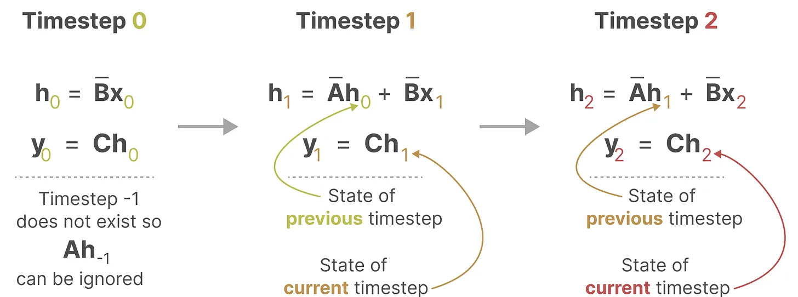
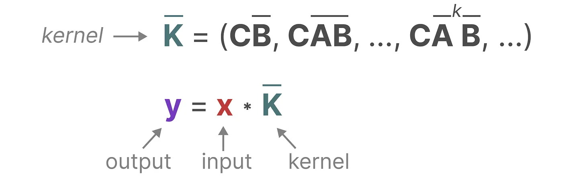

# Mamba 串烧
# Mamba: Linear-Time Sequence Modeling with Selective State Spaces
本文核心内容与思想改编自该博文中的核心与精华：一文通透想颠覆 Transformer 的 Mamba：从 SSM、HiPPO、S4 到 Mamba_mamba 模型 - CSDN 博客。
# 状态空间与状态空间模型 SSM
想象一下我们正在穿过一个迷宫，图中每个小框代表迷宫中的一个位置，并附有某个隐式的信息，例如你距离出口有多远。
而上述迷宫可以简化建模为一个 “状态空间表示 state space representation”，每一个小框都含有：你当前所在的位置 (当前状态 current state)、下一步可以去哪里 (未来可能的状态 possible future states)，以及哪些变化会将你带到下一个状态 (向右或向左)。而描述状态的变量 (在我们的示例中为 X 和 Y 坐标以及到出口的距离) 可以表示为 “状态向量 state vectors”。
一般 SSMs 包括以下组成：
- 输入序列 x (t)，比如在迷宫中向左和向下移动。
- 潜在状态表示 h (t)，比如距离出口距离和 x/y 坐标。
- 输出序列 y (t)，比如再次向左移动以更快到达出口。
然而，它不使用离散序列 (如向左移动一次)，而是将连续序列作为输入并预测输出序列。
SSM 假设系统 (例如在 3D 空间中移动的物体) 可以通过两个方程从其在时间 t 时的状态进行预测「当然，其实下面第一个方程表示成这样可能更好：$$h (t) = Ah (t-1) Bx (t)$$，不然容易引发歧义」。
通过求解这些方程，可以根据观察到的数据：输入序列和先前状态，去预测系统的未来状态。
# SSM 关键的两个方程：状态方程和输出方程
总之，SSM 的关键是找到：状态表示 (state representation)$$h (t)$$，以便根据输入序列预测输出序列。
而这两个方程也是状态空间模型的核心，且矩阵 A、 B、 C、 D 都是可以学习的参数。
第一个方程：状态方程，矩阵 B 与输入 x (t) 相乘之后，再加上矩阵 A 与前一个状态 h (t) 相乘的结果
换言之，B 矩阵影响输入 x (t)，A 矩阵影响前一个状态 h (t)，而 h (t) 指的是任何给定时间 t 的潜在状态表示 (latent state representation)，而 x (t) 指的是某个输入「** 当然，还是上面那句话，表示成这样更好：$$h (t) = Ah (t-1) Bx (t)$$ **」。
第二个方程：输出方程，描述了状态如何转换为输出 (通过矩阵 C)，以及输入如何影响输出 (通过矩阵 D)
# 建立对 SSM 中两个核心方程的统一视角
最终，我们可以通过下图统一这两个方程：
为了进一步加深对该图的理解，我们一步一步拆解下
- 假设我们有一些输入信号 x (t)，该信号首先乘以矩阵 B。
2. 上面第一步的结果，加上：上一个状态与矩阵 A 相乘 (矩阵 A 描述了所有内部状态如何连接) 的结果，用来更新状态 state。
3. 然后，使用矩阵 C 来将状态转换为输出。
4. 最后，再利用矩阵 D 提供从输入到输出的直接信号，这通常也称为跳跃连接 skip-connection。
5. 由于矩阵 D 类似于跳跃连接，因此在没有跳跃连接的情况下，SSM 通常被视为如下：
回到我们的简化视角，现在可以关注只矩阵 A、B、C 构建的 SSM 核心。
总之，这两个方程共同旨在根据观测数据预测系统的状态，且考虑到输入一般都是连续的，因此 SSM 的主要表示是连续时间表示 (continuous-time representation)。
# 从 SSM 到 S4 的升级
用了三步：离散化 SSM、循环 / 卷积表示、基于 HiPPO 处理长序列。
# 离散数据的连续化：基于零阶保持技术做连续化并采样
由于除了连续的输入之外，还会通常碰到离散的输入 (如文本序列)，因此如果模型也能处理离散化数据则再好不过。怎么做到呢？好在 可以利用零阶保持技术 (Zero-order hold technique)。

- 首先，每次收到离散信号时，我们都会保留其值，直到收到新的离散信号，如此操作导致的结果就是创建了 SSM 可以使用的连续信号。
- 保持该值的时间由一个新的可学习参数表示，称为步长 (size)——$$\Delta$$ ，它代表输入的阶段性保持 (resolution)。
- 有了连续的输入信号后，便可以生成连续的输出，并且仅根据输入的时间步长对值进行采样。
这些采样值就是我们的离散输出，且 可以按如下方式做零阶保持
它们共同使我们能够从连续 SSM 转变为离散 SSM，使得不再是函数到函数 x (t) → y (t)，而是序列到序列 → ，所以你看到离散化的 SSM 时，不再带参数 t 了
这里，矩阵 A 和 B 现在表示模型的离散参数 (且这里 使用 而不是 来表示离散时间步长)。
注意：我们在保存时，仍然保存 矩阵 A 的连续形式 (而非离散化版本)，只是在训练过程中，连续表示被离散化 (During training, the continuous representation is discretized)。
# 循环结构表示 The Recurrent Representation
总之，离散 SSM 允许 可以用离散时间步长重新表述问题。

在每个时间步，都会涉及到隐藏状态的更新 (比如 $$h_k$$* 取决于 和 $$Ah_{k-1}$$ 的共同作用结果，* 然后通过 $$Ch_k$$ 预测输出 $$y_k$$)。

为方便大家理解其中的细节，我再展开一下 $$y_2$$
有没有眼前一亮？如此，便可以 RNN 的结构来处理。
然后 可以这样展开 (其中，$$h_k$$ 始终是 $$Bx_k$$ 和 $$Ah_{k-1}$$ 的共同作用之下更新的)。
# 卷积结构表示 The Convolution Representation
在经典的图像识别任务中，我们用过滤器 (* 即卷积核 kernels)* 来导出聚合特征，而 SSM 也可以表示成卷积的形式。
由于我们处理的是文本而不是图像，因此我们需要一维视角
而用来表示这个 “过滤器” 的内核源自 SSM 公式。

1. 与卷积一样，我们可以使用 SSM 内核来检查每组 token 并计算输出

2. 内核将移动一次以执行下一步的计算。
3. 最后一步，我们可以看到内核的完整效果：

至于上图中的 $$y_2$$ 是咋计算得到的，别忘了我上面推导出来的。
总结一下，将 SSM 表示为卷积的一个主要好处是它可以像卷积神经网络 CNN 一样进行并行训练。然而，由于内核大小固定，它们的推理不如 RNN 那样快速。
最终，SSM 可以视为从输入信号到输出信号的参数化映射。
1.SSMs 可以当做是 RNN 与 CNN 的结合「These models can be interpreted as acombination of recurrent neural networks (RNNs) and convolutional neural networks (CNNs)」，即推理用 RNN，训练用 CNN。
2. 总之，这类模型可以非常高效地计算为递归或卷积，在序列长度上具有线性或近线性缩放 (This class of models can be computed very efficiently as either arecurrence or convolution, with linear or near-linear scaling in sequence length。
# 矩阵 A 的问题与解决策略 ——HiPPO
我们之前在循环表示中看到的那样，矩阵 A 捕获先前 previous 状态的信息来构建新状态 ($$h_k = A h_{k-1} + B x_k$$，当 k = 5 时，则有 $$h_5 = A h_{4} + B x_5$$)
其实，某种意义上，算是矩阵 A 产生了隐藏状态 (matrix A produces the hidden state)。
由于矩阵 A 只记住之前的几个 token 和捕获迄今为止看到的每个 token 之间的区别，特别是在循环表示的上下文中，因为它只回顾以前的状态。
那么我们怎样才能以保留比较长的 memory 的方式创建矩阵 A 呢？
答案是可以使用 Hungry Hungry Hippo ((High-order Polynomial Projection Operator，简称 H3)，HiPPO 尝试将当前看到的所有输入信号压缩为系数向量 (HiPPO attempts to compress all input signals it has seen thus far into a vector of coefficients)。
它使用矩阵 A 构建一个 “可以很好地捕获最近的 token 并衰减旧的 token” 状态表示 (to build a state representation that captures recent tokens well and decays older tokens)，其公式可以表示如下：
具体表示可以如下图所示：
正由于 HiPPO 矩阵可以产生一个隐藏状态来记住其历史 (从数学上讲，它是通过跟踪 Legendre polynomial 的系数来实现的，这使得它能够逼近所有以前的历史)，使得在被应用于循环表示和卷积表示中时，可以处理远程依赖性
如此，S4 的定义就出来了：序列的结构化状态空间 ——Structured State Space for Sequences，一类可以有效处理长序列的 SSM。
# SSM 的问题：矩阵参数固定不变，无法针对输入做针对性推理
首先，Linear Time Invariance (LTI) 规定 SSM 中的 A、B、C 始终是固定不变的参数。这意味着：
1. 对于 SSM 生成的每个 token，矩阵 A 、B、C 都是相同的 (regardless of what sequence you give the SSM, the values of A,B,and C remain the same. We have a static representation that is not content-aware)
2. 使得 SSM 无法针对输入做针对性的推理「since it treats each token equally as a result of the fixed A, B, and C matrices. This is a problem as we want the SSM to reason about the input (prompt)」
此外，如下图所示，无论输入 x 是什么，矩阵 B 都保持完全相同，因此与 x 无关。
同样，无论输入如何，A 和 C 也保持固定。
# Mamba 组成结构与原理简析
简言之，Mamba 是一种状态空间模型 (SSM)，建立在更现代的适用于深度学习的结构化 SSM (简称 S6) 基础上，与经典架构 RNN 有相似之处。
# Mamba = 有选择处理信息 + 硬件感知算法 + 更简单 SSM 架构
与先前的研究相比， Mamba 主要有三点创新：
1. 对输入信息有选择性处理 (Selection Mechanism)
相比 SSM 压缩所有历史记录 (当然， transformer 则是不压缩所有历史记录)， mamba 设计了一个简单的选择机制，通过 “参数化
SSM 的输入”，以便关注或忽略特定的输入。这样一来，模型能够过滤掉与问题无关的信息，并且可以长期记住与问题相关的信息。
2. 硬件感知的算法 (Hardware-aware Algorithm)
该算法采用 “并行扫描算法” 而非 “卷积” 来进行模型的循环计算，但为了减少 GPU 内存层次结构中不同级别之间的 IO 访问，
没有具体化扩展状态。
当然，这点也是受到了 S5(Simplified State Space Layers for Sequence Modeling) 的启发。
3. 更简单的架构
将 SSM 架构的设计与 transformer 的 MLP 块合并为一个块 (combining the design of prior SSM architectures with the MLP block of Transformers into a single block) ，来简化过去的深度序列模型架构，从而得到一个包含 selective state space 的架构设计。
# 选择性状态空间模型：从 S4 到 S6
作者认为，序列建模的一个基础问题是把上下文压缩成更小的状态 ( We argue that a fundamental problem of sequence modeling is compressing context into a smaller state )，从这个角度来看：
注意力机制虽然有效果但效率不算很高，毕竟其需要显式地存储整个上下文 (
storing the entire context，也就是KV缓存)，直接导致训练和推理消耗算力大。好比，Transformer就像人类每写一个字之前，都把前面的所有字 + 输入都复习一遍，所以写的慢。RNN的推理和训练效率高，但性能容易受到对上下文压缩程度的限制。
On the other hand, recurrent models are efficient because they have a finite state, implying constant-time inference and linear-time training. However, their effectiveness is limited by how well this state has compressed the context。
好比， RNN 每次只参考前面固定的字数 (仔细体会这句话： When generating the output, the RNN only needs to consider the previous hidden state and current input. It prevents recalculating all previous hidden states which is what a Transformer would do )，写的快是快，但容易忘掉更前面的内容。
- 而
SMM的问题在于其中的矩阵 A B C 始终是不变的，无法针对不同的输入针对性的推理，详见上文
- 最终，
Mamba的解决办法是，让模型对信息有选择性处理，可以关注或忽略特定的内容，即使状态大小固定也能压缩上下文。好比，Mamba每次参考前面所有内容的一个概括，越往后写对前面内容概括得越狠，丢掉细节、保留大意。
总之，序列模型的效率与效果的权衡点在于它们对状态的压缩程度：
高效的模型必须有一个小的状态 (比如
RNN或S4)而有效的模型必须有一个包含来自上下文的所有必要信息的状态 (比如
transformer)
而 mamba 为了兼顾效率和效果，选择性的关注必须关注的、过滤掉可以忽略的：
为方便大家理解，再进一步阐述 mamba 与其前身结构化空间模型 S4 的优势。
首先，在其前身 S4 中，其有 4 个参数 **(∆, A, B, C)**。

且它们都是固定的，不随输入变化 (即与输入无关)，这些参数控制了以下两个阶段：
第一阶段 (
1a 1b)，通常采用固定公式A = 𝑓𝐴(∆, A)和B = 𝑓𝐵(∆, A, B)，将 “连续参数”(∆,A,B)转化为 “离散参数”(A,B)，其中(𝑓𝐴, 𝑓𝐵)称为离散化规则，且可以使用多种规则来实现这一转换。The first stage transforms the “continuous parameters” (∆, A, B) to “discrete parameters” (A, B) through fixed formulas A = 𝑓𝐴(∆, A) and B = 𝑓𝐵(∆, A, B), where the pair (𝑓𝐴, 𝑓𝐵) is called a discretization rule.例如下述方程中定义的零阶保持 (
ZOH)：Various rules can be used such as the zero-order hold (ZOH) defined in equation (4)..png)
第二阶段 (
2a 2b，和3a 3b)，在参数由(∆，A, B, C)变换为(A, B, C)后，模型可以用两种方式计算，即线性递归 (2) 或全局卷积 (3)。After the parameters have been transformed from (∆, A, B, C) ↦ (A, B, C), the model can be computed in two ways, either as a linear recurrence (2) or a global convolution (3)。
如之前所说的
模型通常使用卷积模式 (3) 可以进行高效的并行化训练「 其中整个输入序列提前看到，为何可以做高效的并行化呢，因为该模式能够绕过状态计算，并实现仅包含 (B, L, D) 的卷积核 (3a)，即
Thus the more efficient convolution mode wasintroduced which could bypass the state computation and materializes a convolution kernel (3a) of only (𝙱, 𝙻, 𝙳)」。
并切换到循环模式 (2) 以高效的自回归推理 (其中输入每次只看到一个时间步)
the model uses the convolutional mode (3) for efficient parallelizable training (where the whole input sequence is seen ahead of time), and switched into recurrent mode (2) for efficient autoregressive inference (wheret he inputs are seen one timestep at a time).
下面，再分析下各个变量的含义
- \Delta$$ 一个标量，类似遗忘门 即
data dependent的 Δ 跟RNN的forget gate的功能类似(step size Δ that represents the resolution of the input discretization of SSMs is the principled foundation of heuristic gating mechanisms.)
B，起到的作用类似于：进 RNN 的memory
C，起到的作用类似于：取 RNN 的memory咋理解？我拿出上文第二部分的这个图 一摆，就一目了然了。
所以有人说，
data dependent的 $$B/C$$ 的功能跟 RNN 的input/output gate类似。
- A，意味着对应这个维度的
SSM来说，A 在每个hidden state维度上的作用可以不相同，起到multi-scale/fine-grained gating的作用，这也是LSTM网络里面用element-wise product的原因。
其次，通过之前的讲解，可知 $$\boldsymbolA} \in \mathbb{R}, \boldsymbolB} \in \mathbb{R}, \boldsymbolC} \in \mathbb{R}$$ 矩阵都可以由 N 个数字表示 (the $$A ∈ ℝ^𝑁×𝑁}$$, $$B ∈ ℝ$$ , $$C ∈ ℝ^{1×𝑁}$$ matrices can all be represented by 𝑁 numbers.)
为了对批量大小为、长度为、具有个通道 (类似 R G B 三个通道) 的输入序列进行操作，SSM 被独立地应用于每个通道 (To operate over an input sequence 𝑥 of batch size 𝐵 and length 𝐿 with 𝐷 channels, the SSM is applied independently to each channel)。
请注意，在这种情况下，每个输入的总隐藏状态具有维，在序列长度上计算它需要时间和内存 (the total hidden state has dimension 𝐷𝑁 per input, and computing it over the sequence length requires 𝑂(𝐵𝐿𝐷𝑁) time and memory)。
最后，在 Mamaba 中，作者让这些参数矩阵、矩阵、成为输入的函数 (即可学习或可训练的)，让模型能够根据输入内容自适应地调整其行为。

1. 从 S4 到 S6 的过程中：
影响输入的 B 矩阵、影响状态的 C 矩阵的大小从原来的 (D,N)「其中，D 指的是输入向量的维度，比如一个颜色的变量一般有 R G B 三个维度，N 指 SSM 的隐藏层维度 hidden dimension，当然 一般设的比较小」。
变成了 (B,L,N)「这三个参数分别对应 batch size、sequence length、hidden state size」
且 $$\Delta$$ 的大小由原来的 D 变成了 (B,L,D)
且每个位置的 B 矩阵、C 矩阵、$$\Delta$$ 都不相同，这意味着对于每个输入 token，现在有不同的 B 矩阵、C 矩阵，可以解决内容感知问题
进一步，咱们通过
来逐一将 $$B, C, \Delta$$ 数据依赖化 (data dependent)「其中的这个 $$\text {Linear}_{d}(x)$$ 代表把 D 维的输入向量 x 经过一个线性层映射到 d 维」
2. 虽然 A 没有变成 data dependent，但是通过 SSM 的离散化操作之后，$$(\bar {A}, \bar {B})$$ 会经过 outer product 变成 (B, L, N, D) 的 data dependent 张量，算是以一种 parameter efficient 的方式来达到 data dependent 的目的。
总之，Mamba 通过合并输入的序列长度和批量大小来使矩阵 B 和 C，甚至步长 Δ 取决于输入 (其意味着对于每个输入 token，现在有不同的 B 和 C 矩阵，可以解决内容感知问题)，从而达到选择性地选择将哪些内容保留在隐藏状态以及忽略哪些内容的目标。至于步长 Δ，较小的步长 Δ 会也能做到忽略特定单词，而更多地使用先前的上下文，而较大的步长 Δ 会更多地关注输入单词而不是上下文。
# 并行扫描（parallel scan）算法
由于 A B C 这些矩阵现在是动态的了，因此无法使用卷积表示来计算它们 (CNN 需要固定的内核)，因此，我们只能使用循环表示，如此也就而失去了卷积提供的并行训练能力。
so，为了实现并行化，让我们探讨如何使用循环计算输出：
# 硬件感知的状态扩展：借鉴 Flash Attention
# 简化的 SSM 架构
将大多数 SSM 架构比如 H3 的基础块，与现代神经网络比如 transformer 中普遍存在的门控 MLP 相结合，组成新的 Mamba 块，重复这个块，与归一化和残差连接结合，便构成了 Mamba 架构

顺带提一嘴，transformer quality in linear time 以及 mega moving average equipped gated attention 的这两个工作，也用了类似的结
构：即删除 transformer 的 ffn/glu 结构
最终流程如下 (图源自 mamba 原论文)